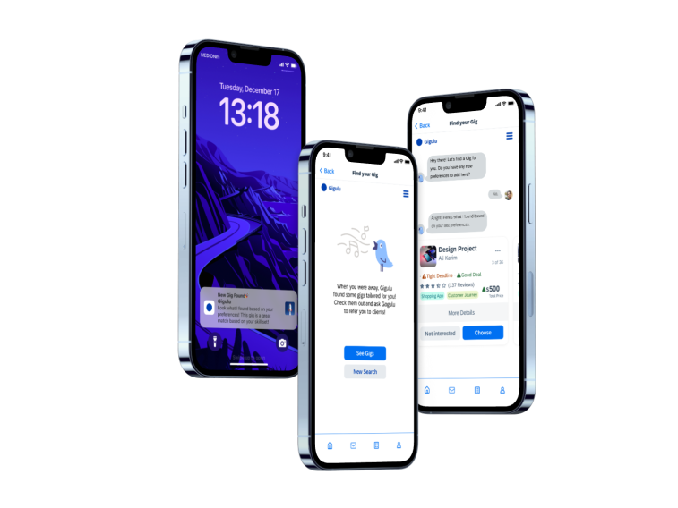
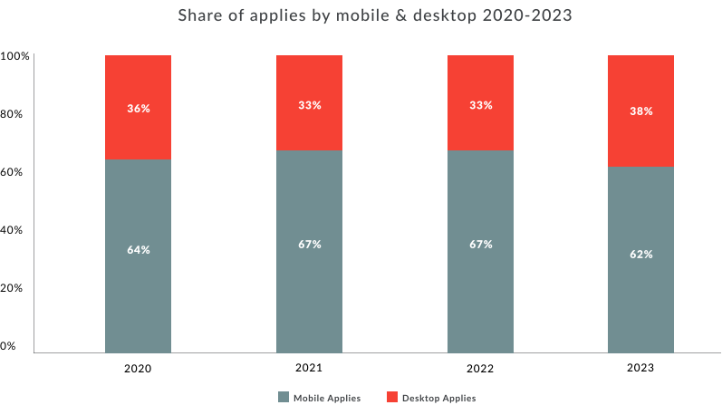
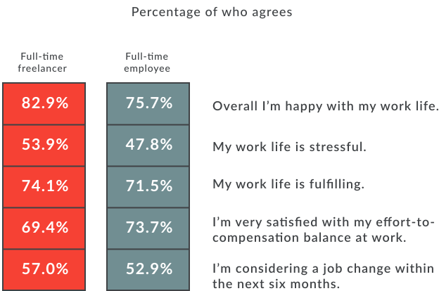
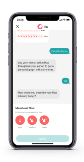
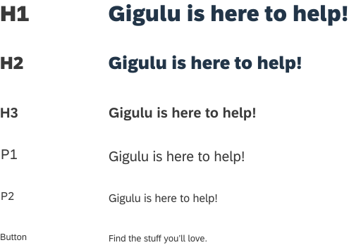
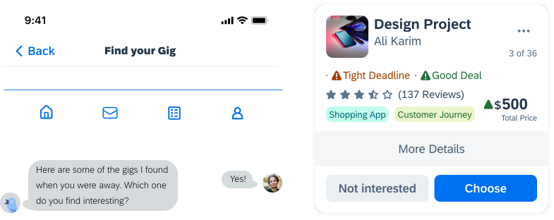

Gigulu Chatbot

✕ ✕Overview: An AI assistant on a crowdsourcing platform for freelancers and headhunters to help find gigs or talent at any time, from anywhere.
Role: UX Researcher, UX/UI designer
Toolkit: Figma, Pencil and Paper
Test PrototypeUX Research
• Background:
This project was a fun challenge that I took from my senior colleague at SAP to solve, during which I had a main goal to follow: AI helping freelancers reducing time and energy spent to search for gigs.
• Storyline:
Sarah, a UX freelancer wants to find the gigs that are best match to her expertise/skill set without putting too much effort/time in searching/filtering results to find more clients.
• Methodologies:
- Secondary Research
- Design Thinking
Secondary Research
• Device preference:
According to Appcast 2024 benchmark report, today, around two thirds of applies are made from mobile devices. While we have seen a consistent increase in mobile applies.
When examining the distribution of mobile applications by job function, gig workers are notably prominent, with 86% of applications submitted using mobile devices.

• Work-life balance:
Another study by Joblist between 801 full-time employees and 193 freelancers showed that freelancers were more likely to be satisfied and fulfilled at work. A staggering 82.9% said they were happy with their work life overall.

Design Thinking
User pain points
- Finding the right gig/opportunity takes a long time when searching.
- Filtering best results is complicated and limited to find gigs.
- Low visibility makes it hard and frustrating to get clients or gigs.
Problem
How might we help UX freelancers like Sarah efficiently find high-quality gigs that match their expertise, without overwhelming them with time-consuming search and filtering?
User Story
Keeping the importance of saving time and work-life balance in mind for freelancers, I sketched the story below to explore how AI can help increase this work-life balance by finding gigs faster and easier.


AI Assistant
Created an interactive chatbot prototype that learns from user input, asks clarifying questions, and provides personalized gig recommendations based on skills and preferences.
Usability testing
The high-fidelity designs were tested with 5 freelancers to gather feedback and note key takeaways or learnings for future.
UX Design
Wireframes
According to the secondary research findings, I created paper wireframes for the main AI assistant on a crowdsourcing platform.
1. User actively searching for gigs with AI assistant:


2. User passively getting AI recommendation with pre-filled preferences:


Design system
I used SAP's open source Fiori design system for designing this chatbot. I used 2 primary colors as well as 3 secondary ones and 72Brand as the main typography.
Typography

Colour pallet
Components

Buttons
Key Takeaways
• Challenges:
- Freelancers were overwhelmed by filtering and scanning irrelevant gigs, making it challenging to design a chatbot flow that felt faster than traditional search without oversimplifying decisions.
- Designing an experience that felt helpful and proactive—without taking control away from users—was difficult, especially around job matching.
• Lessons learned:
- Low-fidelity sketches helped validate flow structure and question sequencing before investing in UI polish.
- Applying a design system to chatbot UI elements (buttons, states, feedback) ensured clarity and reduced ambiguity across interactions.
- Moving back and forth between empathize, define, and ideate stages led to better-aligned solutions than following the process strictly step by step.